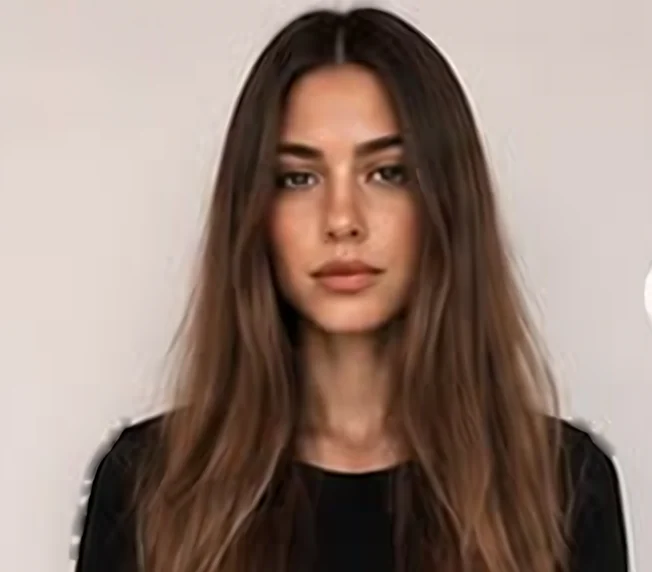
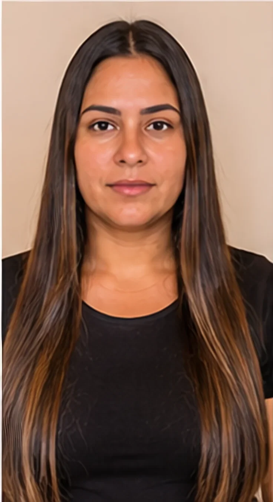
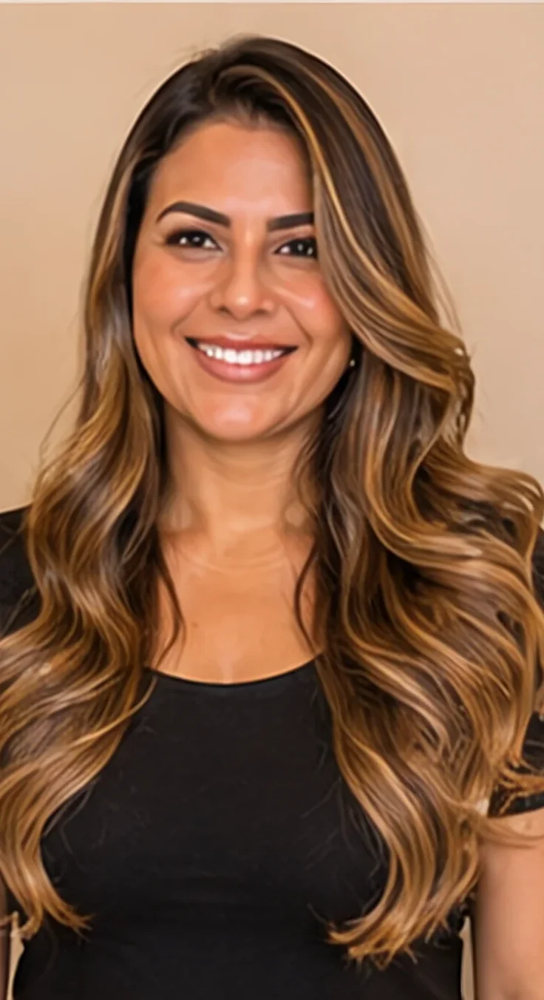
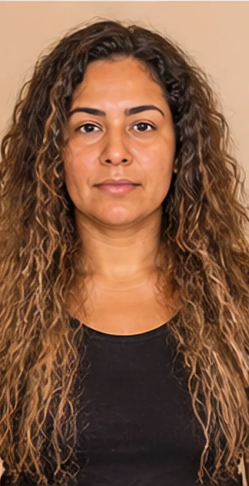
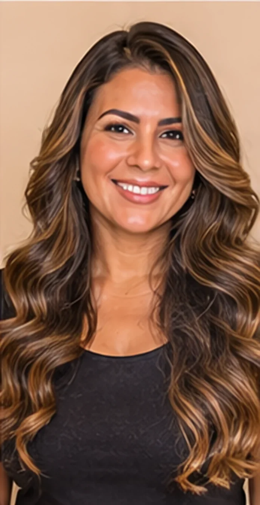
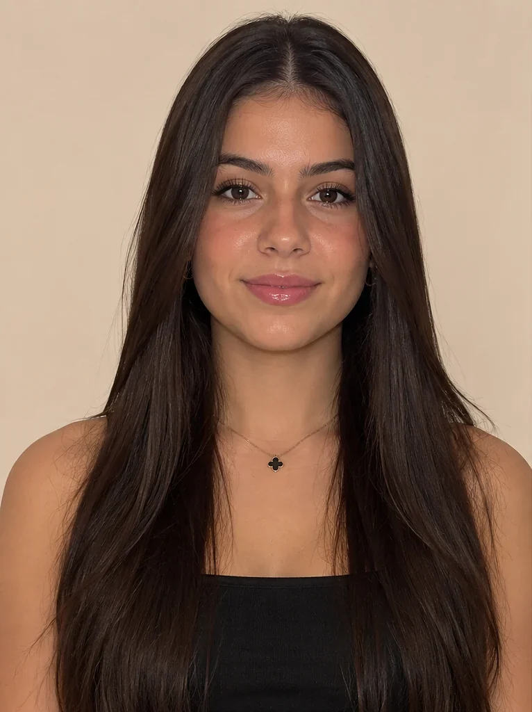
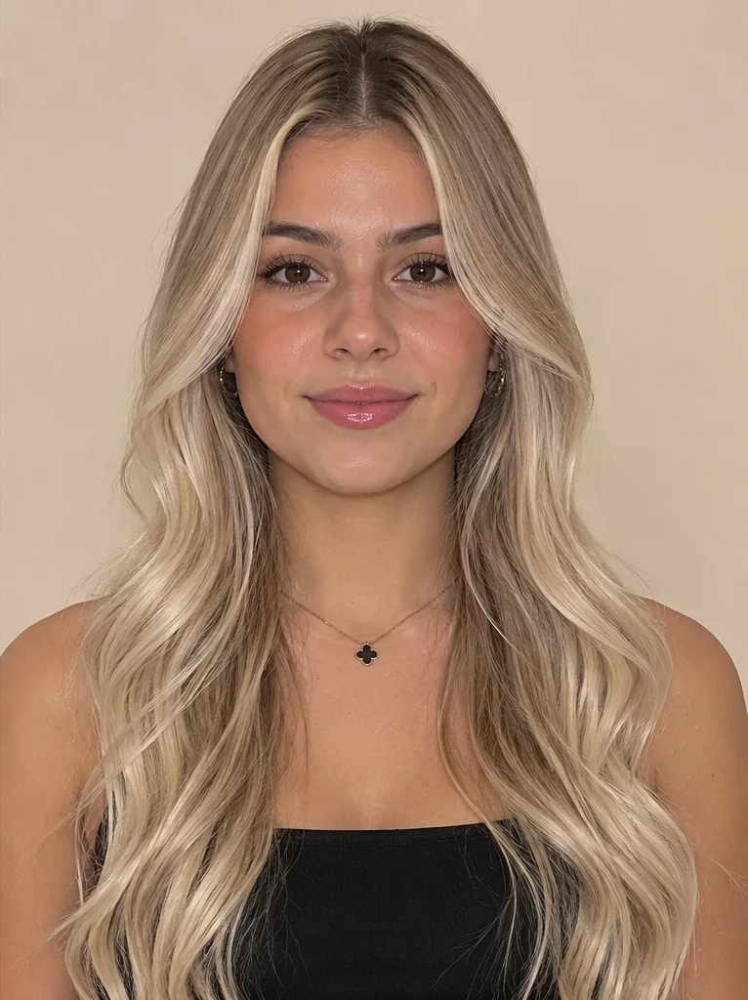
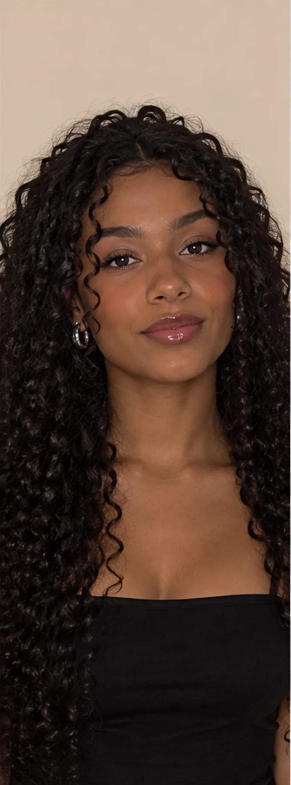
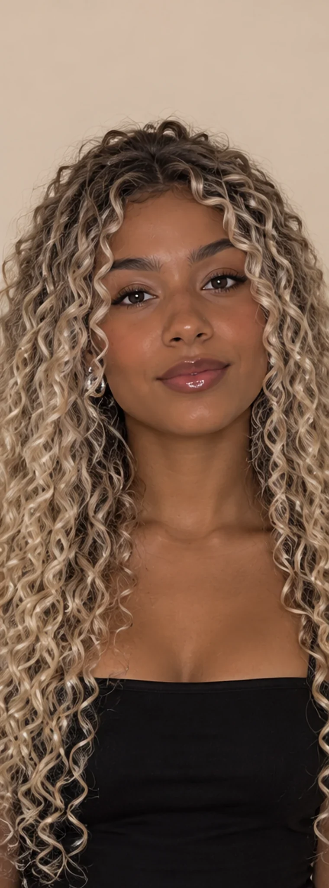

 AntesDepois
AntesDepoisMorena iluminada
Mechas suaves com ondas modeladas, para dar luz sem perder o tom natural.
Arraste a linha de cada foto para ver a transformação. Resultados reais das nossas clientes.

AntesDepoisMechas suaves com ondas modeladas, para dar luz sem perder o tom natural.


AntesDepoisCabelo liso e sem vida que ganhou mechas douradas, corte em camadas e ondas modeladas.


AntesDepoisFio ressecado e armado que ficou macio, alinhado e com brilho depois do tratamento e da escova.


AntesDepoisDo castanho escuro ao loiro frio, com clareamento protegido e tonalização para manter o fio saudável.


AntesDepoisCachos escuros que ganharam luzes douradas, mantendo a definição e a saúde dos fios.
Fotos ilustrativas até receber as fotos reais das clientes, com autorização.